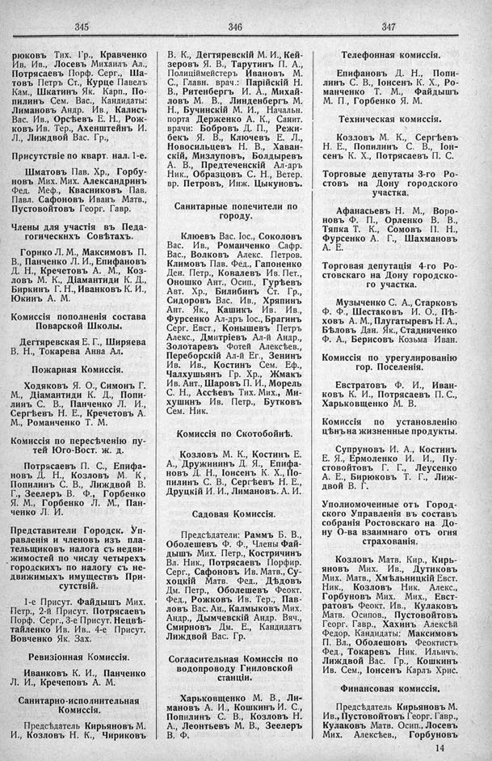

Лист источника 247
Скан

Распознанный текст
345
рюковъ Тих. Гр., Кравченко
Ив. Ив., Лосевъ Михаилъ Ал.,
Потрясаевъ Порф. Серг., Ша-
товъ Петръ Ст., Курце Павелъ
Кам., Шкатинъ Як. Карп., По-
пилинъ Сем. Вас., Кандидаты:
Лимановъ Андр. Ив., Калисъ
Вас. Ив., Орсѣевъ Е. Н., Рож-
ковъ Ив. Тер., Ахенштейнъ И.
Л., Лиждвой Вас. Гр.,
Присутствіе по кварт. нал. 1-е.
Шматовъ Пав. Хр., Горбу-
новъ Мих. Мих. Александринъ
Фед. Меф., Квасниковъ Пав.
Павл. Сафоновъ Иванъ Матв.,
Пустовойтовъ Георг. Гавр.
Члены для участія въ Педа-
гогическихъ Совѣтахъ.
Горнко Л. М., Максимовъ П.
В., Панченко Л. И., Епифановъ
Д. Н., Кречетовъ А. М., Коз-
ловъ М. К., Діамантиди К. Д.,
Биркинъ Г. Н., Иванковъ К. И.,
Юкинъ А. М.
Комиссія пополненія состава
Поварской Школы.
Дегтяревская Е. Г., Ширяева
В. Н., Токарева Анна Ал.
Пожарная Комиссія.
Ходяковъ Я. О., Симонъ Г.
М., Діамантиди К. Д., Попи-
линъ С. В., Панченко Л. И.,
Сергѣевъ Н. Е., Кречетовъ А.
М., Романченко Т. М.
Комиссія по пересѣченію пу-
тей Юго-Вост. ж. д.
Потрясаевъ П. С., Епифа-
новъ Д. Н., Козловъ М. К ,
Попилинъ С. В., Лиждвой В.
Г., Зеелеръ В. Ф., Горбенко
Я. М., Горбенко Л. М., Пан-
ченко Л. И.
Представители Городск. Уп-
равленія и членовъ изъ пла-
тельщиковъ налога съ недви-
жимостей по числу четырехъ
городскихъ по налогу съ не-
движимыхъ имуществъ При-
сутствій.
1-е Присут. Файдышъ Мих.
Петр., 2-й Присут. Потрясаевъ
Порф. Серг., 3-е Присут. Нецвѣ-
тайленко Ив. Ив.. 4-е Присут.
Вовченко Як. Зах.
Ревизіонная Комиссія.
Иванковъ К. И., Панченко
Л. И., Кречеповъ А. М.
Санитарно-исполнительная
Комиссія.
Предсѣдатель Кирьяновъ М.
И., Козловъ Н. К., Чириковъ
346
В. К., Дегтяревскій М. И., Кей-
зеровъ Я. В., Тарутинъ П. А.,
Полиціймейстеръ Ивановъ М.
С., Главн. врач.: Парійскій Н.
В., Ритенбергъ И. А., Михай-
ловъ М. В., Линденбергъ М.
Н., Бучинскій М. И., Начальн.
порта Держенко А. К., Санит.
врачи: Бобровъ Д. П., Режи-
бекъ Я. В., Ключевъ Е. Л.,
Новосильцевъ Н. В., Хаван-
скій, Мизлуповъ, Болдыревъ
А. В., Предтеченскій Ал-дръ
Ник., Образцовъ С. Н., Ветер.
вр. Петровъ, Инж. Цыкуновъ.
Санитарные попечители по
городу.
Клюевъ Вас. Іос., Соколовъ
Вас. Ив., Романченко Сафр.
Вас., Волковъ Алекс. Петров.
Климовъ Пав. Фед., Гапоненко
Ден. Петр., Ковалевъ Ив. Пет.,
Оношко Ант., Осип., Гурѣевъ
Авт. Хр., Билибинъ Ст. Гр.,
Сидоровъ Вас. Ив., Хряпинъ
Ант. Як., Кашикъ Ив. Ив.,
Фурсенко Ал-дръ Іос., Брагинъ
Серг. Евст., Конышевъ Петръ
Алекс., Дмитріевъ Ал-й Андр.,
Золотаревъ Фотей Алексѣев.,
Переборскій Ал-й Ег., Зенинъ
Ив. Ив., Костинъ Сем. Еф.,
Чалхушьянъ Гр. Хр., Жмакъ
Ив. Ант., Шаровъ П. И., Морель
С. Н., Ассѣевъ Тих. Мих., Ми-
хушинъ Ив. Петр., Бутковъ
Сем. Ник.
Комиссія по Скотобойнѣ.
Козловъ М. К., Костинъ Е.
А., Дружининъ Д. Я., Епифа-
новъ Д. Н., Іонсенъ К. Х., По-
пилинъ С. В., Сергѣевъ Н. Е.,
Друцкій И. И., Лимановъ. А. И.
Садовая Комиссія.
Предсѣдатели: Раммъ Б. В.,
Оболешевъ Ф. Ф., Члены Фай-
дышъ Мих. Петр., Костричинъ
Вл. Ник., Потрясаевъ Порфир.
Серг., Сафоновъ Ив. Матв., Су-
хоцкій Матв. Фед., Дѣдовъ
Дм. Петр., Оболешевъ Феокт.
Фед., Рожковъ Ив. Тер., Пав-
ловъ Вас. Ан., Калмыковъ Мих.
Андр., Дымчевскій Андр. Вяч.,
Смирновъ Дм. Е., Кандидатъ
Лиждвой Вас. Гр.
Согласительная Комиссія по
водопроводу Гниловской
станціи.
Харьковщенко М. В., Ли-
мановъ А. И., Кошкинъ И. С.,
Попилинъ С. В., Козловъ Н.
А., Леонтьевъ М. В., Зеелеръ
В. Ф.
347
Телефонная комиссія.
Епифановъ Д. Н., Попи-
линъ С. В., Іонсенъ К. Х., Ро-
манченко Т. М., Файдышъ
М. П., Горбенко Я. М.
Техническая комиссія.
Козловъ М. К., Сергѣевъ
Н. Е., Попилинъ С. В., Іон-
сенъ К. Х., Потрясаевъ П. С.
Торговые депутаты 3-го Ро-
стовъ на Дону городского
участка.
Афанасьевъ Н. М., Воро-
новъ Ф. П., Орленко В. В.,
Тяпка Т. К., Сомовъ П. Н.,
Фурсенко А. Г., Шахмановъ
А. Е.
Торговая депутація 4-го Ро-
стовскаго на Дону городско-
го участка.
Музыченко С. А., Старковъ
Ф. Ф., Шестаковъ И. О., Пѣ-
ховъ А. М., Плугатыревъ Н. А.,
Бѣловъ Дан. Як., Стадниченко
Ф. А., Берисовъ Козьма Иван.
Комиссія по урегулированію
гор. Поселенія.
Евстратовъ Ф. И., Иван-
ковъ К. И., Потрясаевъ П. С.,
Харьковщенко М. В.
Комиссія по установленію
цѣнъ на жизненные продукты.
Супруновъ И. А., Костинъ
Е. Я., Ермоленко И. И., Пу-
стовойтовъ Г. Г., Леусенко
А. Е., Бирюковъ Т. Г., Лиж-
двой В. Г.
Уполномоченные отъ Город-
ского Управленія въ составъ
собранія Ростовскаго на До-
ну О-ва взаимнаго отъ огня
страхованія.
Козловъ Матв. Кир., Кирь-
яновъ Мих. Ив., Дутиковъ
Мих. Матв., Хмѣльницкій Евст.
Ник., Козловъ Ник. Алекс.,
Горбуновъ Мих. Мих., Евст-
ратовъ Феокт. Ив., Кулаковъ
Матв. Осипов., Пустовойтовъ
Георг. Гавр., Хахинъ Алексѣй
Федор. Кандидаты: Максимовъ
П. Вл., Оболешовъ Феоктистъ
Фед., Токаревъ Ник. Ильичъ,
Лиждвой Вас. Гр., Кошкинъ
Ив. Сем., Іонсенъ Карлъ Хрис.
Финансовая комиссія.
Предсѣдатель Кирьяновъ М.
Ив., Пустовойтовъ Георг. Гавр.,
Кулаковъ Матв. Осип., Лосевъ
Мих. Алексѣев., Горбуновъ
14